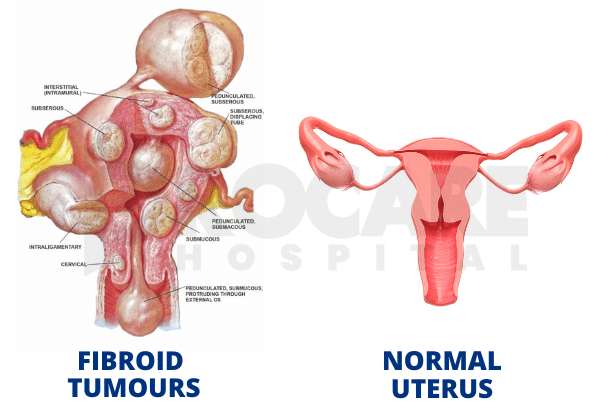

The Natureline non-surgical fibroid treatment pathway
Natureline offers a structured, evidence-based approach to fibroid management without surgery. Our treatment combines botanical formulation, clinical oversight, and patient education to help women achieve symptom relief and improved quality of life.

Clinical assessment
Initial evaluation includes fibroid size, location, symptom severity, and medical history to determine treatment suitability and personalize the care plan.
 Phase 2
Phase 2
Treatment initiation
Botanical formulation therapy begins with clear dosing instructions, lifestyle guidance, and expectations for symptom improvement over the treatment course.

Phase 3Monitoring and reassessment
Regular clinical follow-up with imaging and symptom assessment ensures treatment efficacy and allows for protocol adjustments as needed.
Many women prefer to avoid surgical intervention due to recovery time, surgical risks, or desire to preserve uterine tissue. Natureline's approach offers a clinically supervised alternative with proven safety and efficacy in fibroid reduction.